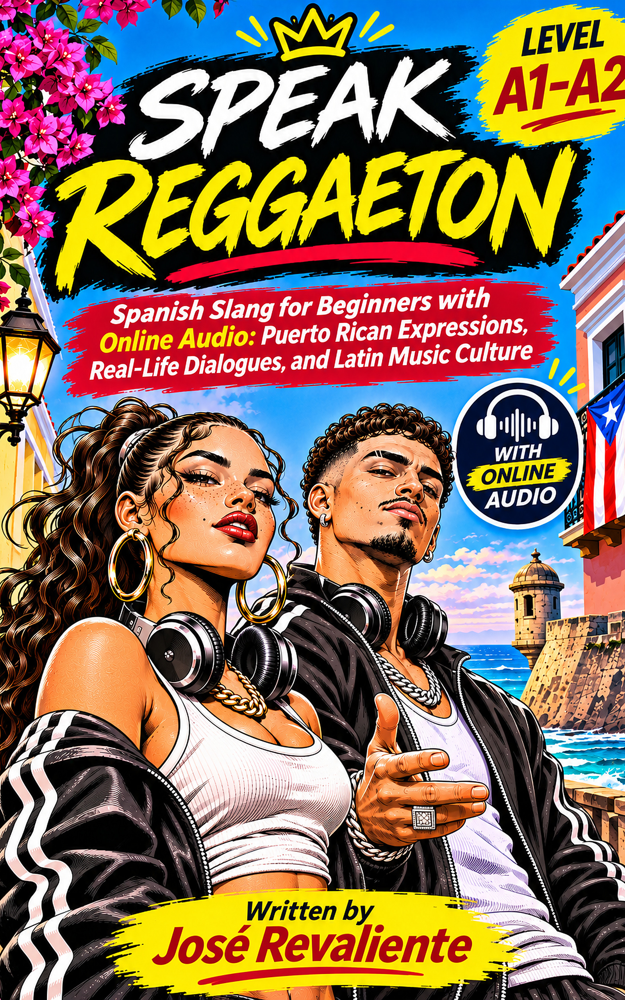

🎧 Listen and follow
Play original dialogue tracks chapter by chapter. Read the matching scene in your book.
Spanish Slang for Beginners with Online Audio: Puerto Rican Expressions, Real-Life Dialogues, and Latin Music Culture

Follow two fictional friends, Nora and Luis, as they prepare a neighbourhood reggaeton night in San Juan. Learn to recognise everyday expressions, make clearer plans, and understand that informal language changes from place to place. No commercial lyrics or recordings are reproduced.
Play original dialogue tracks chapter by chapter. Read the matching scene in your book.
Separate safe beginner phrases from expressions best recognised first.
Puerto Rico is the main setting, with carefully marked regional comparisons.
The tracks below follow the chapter order of the book. The audio files are hosted by Internet Archive, not on this website. Use the printed text to check exact wording, and pause or replay as needed.
Before the First Rehearsal
The room is booked, but Nora cannot find her phone. Luis helps organise the chairs and finds that the missing item is closer than expected.
Open / download MP3 ↗A Poster for Everyone
Their poster sounds like an invitation for friends only. Nora and Luis revise it to welcome the neighbourhood.
Open / download MP3 ↗Twenty Tracks and One Coffee
Nora proposes a quiet café meeting; Luis first imagines dancing, then brings twenty candidate tracks when only two are needed.
Open / download MP3 ↗The Unanswered Invitation
A squeaky chair spoils a recording, and unanswered messages cause needless worry. They correct the audio and make the invitation clearer.
Open / download MP3 ↗Inside the Demo
Nora confuses three music terms. Luis demonstrates the difference between the backing beat and a vocalist's delivery.
Open / download MP3 ↗Room to Dance
They move a chair and leave space for people who want to listen rather than dance. Participation stays optional.
Open / download MP3 ↗Who Gets the Credit?
Luis's post makes their joint project sound like his individual success. He acknowledges the team and rewrites the credit.
Open / download MP3 ↗A Music Video Without a Love Story
An abbreviated caption risks turning friendship into a romantic claim. The friends choose words that say what they intend.
Open / download MP3 ↗Coffee Before the Concert
While budgeting for coffee and the fare home, a message from Santo Domingo creates a money-versus-rooms misunderstanding.
Open / download MP3 ↗A Demo Crosses Borders
Messages from Cuba, Chile and Colombia show why one familiar-looking word can have different regional meanings.
Open / download MP3 ↗Finding Nora's Voice
Nora's introduction sounds rushed. She adjusts pauses and distinguishes casual speech from standard writing.
Open / download MP3 ↗Let the Music Begin
On opening day the demo track goes missing from the computer. Nora and Luis recover it and bring the project together.
Open / download MP3 ↗Source archive: Speak Reggaeton at Internet Archive ↗. The external audio may depend on archive availability. Editorial recording and transcript synchronisation should be checked before final KDP publication.
Dictionary entries come from the book's working manuscript V3.3. “In dialogue” and “Supplementary” are kept distinct. Meanings, regional senses and usage labels are deliberately specific.
Use the same chapter selector above to study a smaller set. Tap the card to reveal the meaning. This is a practice tool, not an assessment of CEFR proficiency.
Dictionary with definitions, Spanish/English examples, case references, region, safety labels and sources.
↓ Download CSVFront, back, and tags. UTF-8 tab-separated file with Anki import headers, linked to the exact vocabulary.
↓ Download TSVThe twelve moments of misunderstanding, negotiation and problem-solving throughout Nora and Luis's story.
↗ Open timelineSee the two main speakers, their goals and the musical event connecting every scene.
↗ Open character mapTwelve chapter worksheets, listening checklist and spaced review plan. Use your browser's Print / Save as PDF.
↗ Open printable pagesListen here or open the original item on Internet Archive; no huge audio downloads are stored in the GitHub repository.
↗ Open the archive01 · Read. Identify the situation and one useful phrase before checking every word.
02 · Listen. Play the matching recording. Follow the text and replay difficult turns.
03 · Respond. Say one short, natural reply. Review the glossary's register label before using slang yourself.
Learning note: This is a language-learning companion, not a transcription of commercial songs or a guide to imitating one fixed “Puerto Rican accent.” Some expressions are region-specific, adult, or context-dependent. The book provides distinctions for recognition and safe practice.
For learning-resource questions, see the information in your purchased book. No account or subscription is required to access these public companion files.